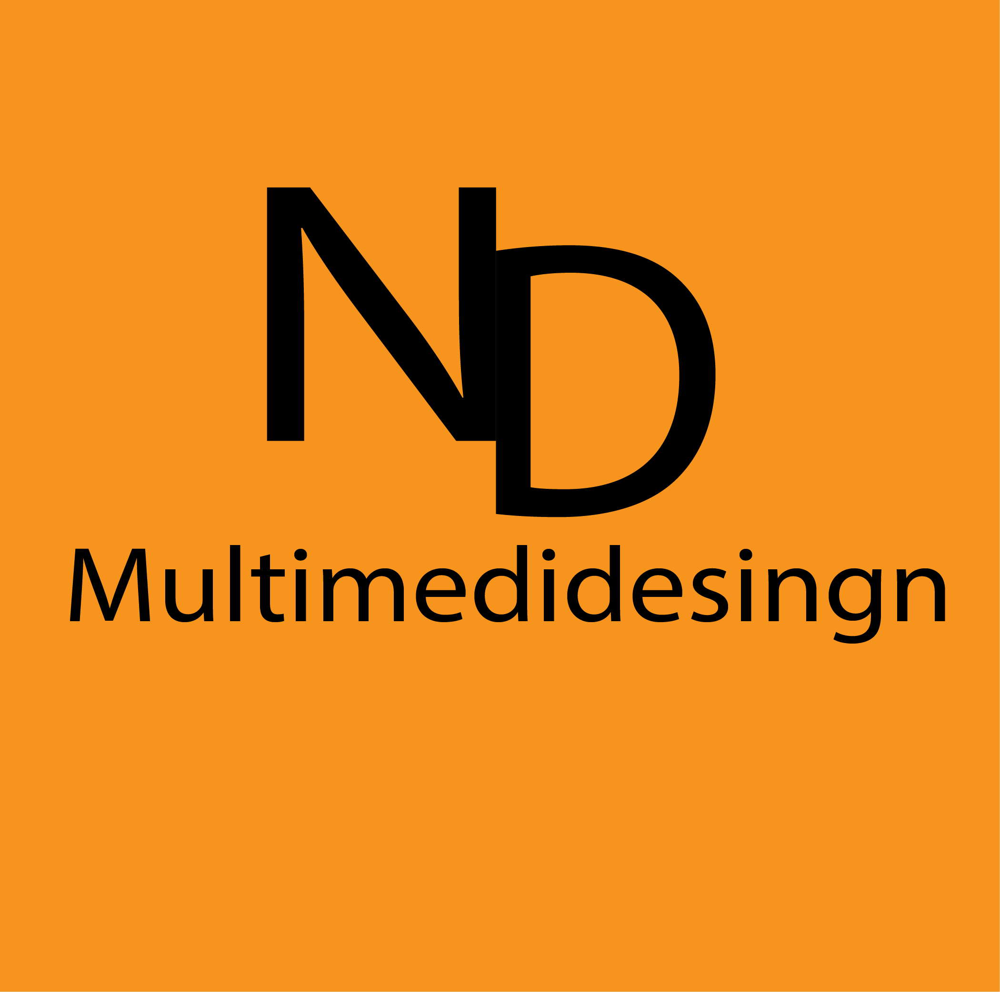
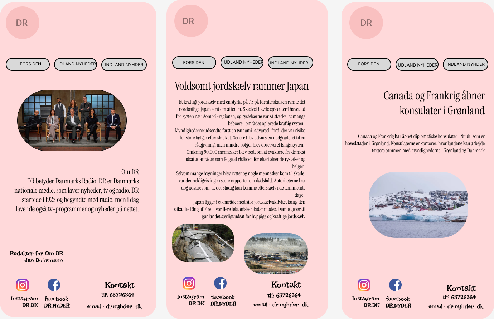

ND Multimediedesign
OM MINE PROJEKTER
Her er mine portfolio hvor jeg har samlet nogle af de projekten og opgaver jeg har arbejdet med. Her viser jeg mine færdigheder og hvordan jeg har udviklet mig gennem forskellige projekter. I mine portfolio kan I se mine ideer, min måde at arbejde på og de ting, jeg har lært undervejs. Jeg har arbejdet med forskellige designprogrammer som Figma, Adobe Illustrator, Adobe Premiere Pro og Adobe After Effects. Jeg har arbejdet med billeder, tekst, farver, layout, video og design. Gennem mine projekter har jeg lært at udvikle ideer og gøre dem til færdige digitale løsninger. Denne portfolio viser hvad jeg kan og hvordan jeg arbejder med kreativt design..

I dette projekt har jeg arbejdet med Figma og lavet en nyhedsside. Jeg har arbejdet med billeder, tekst, farver og layout.

I dette projekt har jeg arbejdet i FABlab og designet min egen nøglering. Jeg har arbejdet med ideudvikling design og materialer.

I dette projekt har jeg arbejdet med Adobe Illustrator og udviklet mit design. Jeg har arbejdet med former, farver og layout for at skabe et visuelt resultat.
I dette projekt har jeg arbejdet med video og redigering på den program som hedder Premiere Pro
I dette projekt har jeg arbejdet med video og redigering på den program som hedder After Effects
I dette projekt har jeg arbejdet med typografi, tekst og layout. Jeg har lært hvordan tekst kan bruges i design for at gøre indhold mere tydeligt og interessant.
ND Multimediedesign
Kontakt mig
E-mail: Nivo_dk20@hotmail.com
Tlf: +45 60137552
Følg mig
Instagram: